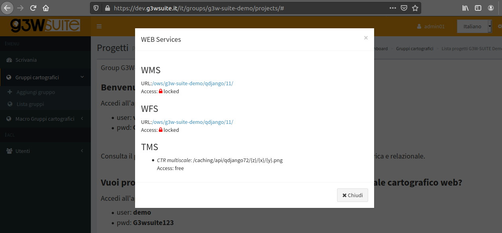
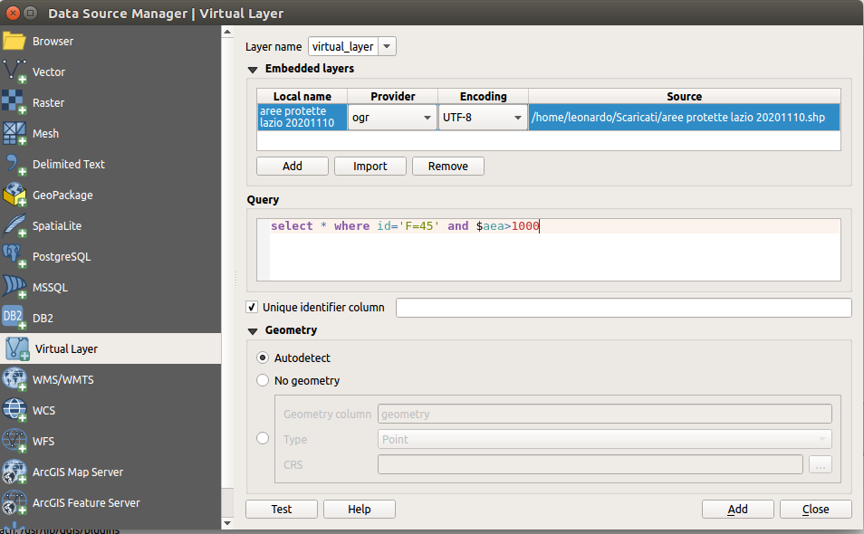
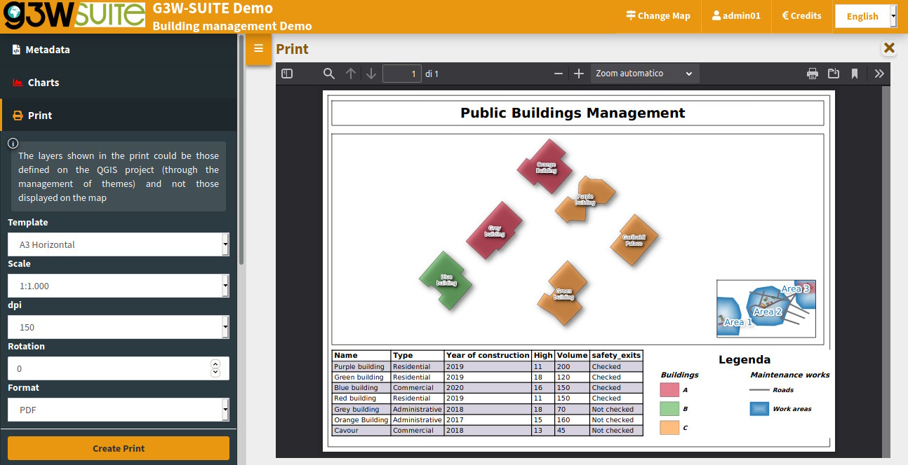

Changelog G3W-Suite 3.1
Release date: 18 November 2020
Changelog for G3W-SUITE 3.1
G3W-SUITE 3.1 offers an extensive list of new and improved features – the most important shown here.
In particular, the new release implements:
- visualization of plots made with QGIS DataPlotly (a great plugin developed by Matteo Ghetta)
- support for Atlas print layout (integrating the dedicated QGIS Server plugin service https://github.com/3liz/qgis-atlasprint)
- increas of the use of QGIS API
To date, the modules/functions are managed through the API are:
- project import
- editing
- OWS server (WMS, WFS and WCS)
- searches (optional, standard through WMS service)
- altas print layout
- editing and visualization constraints
- vector layer API (table view)
We hope you enjoy this great work!
Happy mapping!
Sponsor and funder
Open source project · Gis3W main sponsor.
General
Feature: List of OGC services associated with WebGis service
In the Administration panel, it is possible to consult the list of OGC services (WMS, WFS, WCS, XYZ Tiles) associated with each WebGis service.
The access mode is specified for each service (free or with credentials)

Feature: XYZ Tiles and Base Layers creation
The creation of new base layers (XYZ Tiles) has been automated and simplified.
So you can create new base layers starting from cached layers of any webgis service and make them available for other services.
Feature: Password recovery system
A simple pwd recovery / variation system dedicated to users has been added.

Data providers
Feature: Virtual layers are now supported
Virtual layers are now supported

Plots
Feature: DataPlotly QGIS plugin integration
View plots created using QGIS DataPlotly (a great plugin developed by Matteo Ghetta) in the cartographic client.
The module, based on the Plotly library, manages plots saved as xml through the plugin.
The plots are connected to the layers defined on the QGIS project, in this way, as for the searches and the constraints, it is possible to activate the same plots on all WebGis services in which the reference layer is present.
Plots based on visible or selected geometries will be available in the next version
Cartographic Client
Feature: Data export
More export formats, now is now possible to export from the client:
- geographic vector layers: SHP, GPX, CSV and XLS
- no geographic layers: CSV and XLS
- results of queries or search: SHP, GPX, CSV and XLS
- records related (1: N) to the features queried: CSV and XLS
Feature: New tools available on search builder thanks to QGIS API integration
A better graphical interface, more tools, logical and comparision operators are available when you create your preset search:
- AND and OR logical operator
- tools to enter values: manual, selectbox and autocomplete
- management of dependence between fields
The feature can be based on WMS service (default) or on QGIS API (optional)
Feature: Data 1:N related visible in attribute form
It is now possible to consult data on 1: N relations through the attribute form defined in the QGIS project
Feature: Initial and maximum extent
When you publish a QGIS project we can choose if use the initial QGIS project extent as initial WebGis extent.
The maximum extension is setted from the WMS capabilities extent set on the QGIS project.
Feature: Legend filtered by map content
The client legend becomes interactive thanks to the compatibility with the “Filter legend by Map Content” function defined at the QGIS project level.
Feature: Resizable windows
The query and search results window and the attribute tables are now resizable as desired to improve the display of the contents
Feature: Metadata session restructured
The Metadata session has been graphically restructured and implemented with more information
Feature: Atlas and Report
Printing based on atlases and reports are now supported.
Atlas prints are available both from the generic print session and from the query/search result forms.
Feature: Multi-map management
Print layouts with multiple map items and panoramic maps are now supported

Editing
Feature: New editing tools
New editing functions are implemented:
- add part of a multigeometry
- delete part of a multigeometry
Feature: Editing widgets implementation
The editing widget Value Relation is now associated with a pick layer tool to simplify the connection between the data
Feature: Snap tool
It is now possible to activate the snap function also between layers and no longer only in intralayer mode .
For the full detail see the official manual on ReadTheDocs.